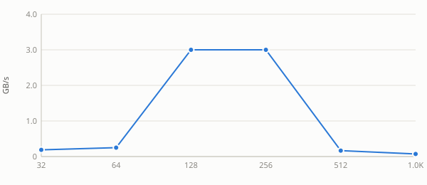
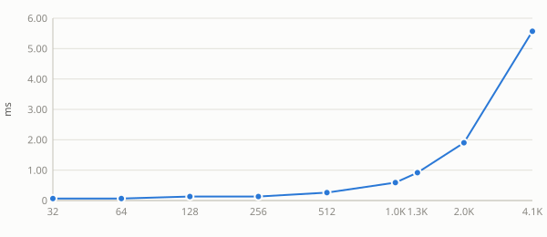
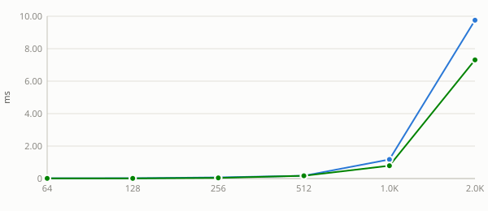
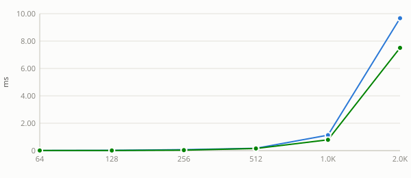
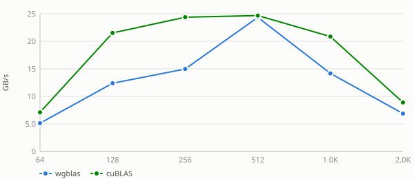
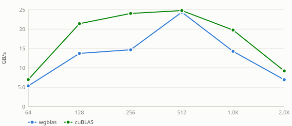
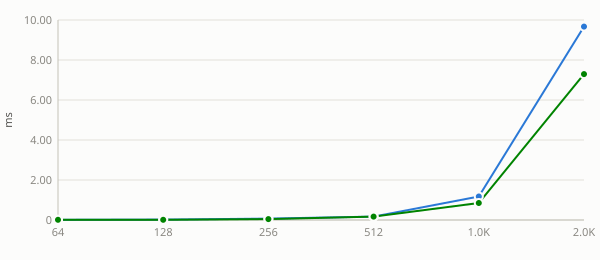

alpha is a plain multiplier here: the kernel applies it unconditionally, with no branch for any particular value. A flat sweep is therefore the expected result and is recorded as a measured null. Levels include 0, 1 and a denormal-producing 1e-38 because those are the values a shader could special-case if it ever grew a branch — and strsm is the routine where one does.
Intel R Iris R Xe Graphics Tgl Gt2 — alpha = -3.75
n
compute ms
GB/s
64
0.1966
0.3333
128
0.3932
0.6667
256
1.6384
0.6400
512
12.7795
0.3282
1024
119.6360
0.1402
2048
1026.0972
0.0654
Intel R Iris R Xe Graphics Tgl Gt2 — alpha = 0
n
compute ms
GB/s
64
0.1966
0.3333
128
0.3932
0.6667
256
1.6384
0.6400
512
13.2055
0.3176
1024
121.5365
0.1380
2048
1027.0802
0.0653
Intel R Iris R Xe Graphics Tgl Gt2 — alpha = 1e-38
beta scales the existing y/C before accumulation. Reference BLAS is permitted to skip reading that operand entirely when beta is 0, so unlike alpha this sweep has a mechanism to be non-flat — a step at 0 means the shortcut is taken, and its size is what it saves.
Benchmark results for sgemmtr on Intel R Iris R Xe Graphics Tgl Gt2.
Intel R Iris R Xe Graphics Tgl Gt2


See also
alpha sweep
alphais a plain multiplier here: the kernel applies it unconditionally, with no branch for any particular value. A flat sweep is therefore the expected result and is recorded as a measured null. Levels include0,1and a denormal-producing1e-38because those are the values a shader could special-case if it ever grew a branch — andstrsmis the routine where one does.Intel R Iris R Xe Graphics Tgl Gt2 — alpha = -3.75
Intel R Iris R Xe Graphics Tgl Gt2 — alpha = 0
Intel R Iris R Xe Graphics Tgl Gt2 — alpha = 1e-38
Intel R Iris R Xe Graphics Tgl Gt2 — alpha = 1
Intel R Iris R Xe Graphics Tgl Gt2 — alpha = 2.5
See also:
beta sweep
betascales the existingy/Cbefore accumulation. Reference BLAS is permitted to skip reading that operand entirely whenbetais 0, so unlikealphathis sweep has a mechanism to be non-flat — a step at 0 means the shortcut is taken, and its size is what it saves.Intel R Iris R Xe Graphics Tgl Gt2 — beta = -3.75

Intel R Iris R Xe Graphics Tgl Gt2 — beta = 0

Intel R Iris R Xe Graphics Tgl Gt2 — beta = 1

Intel R Iris R Xe Graphics Tgl Gt2 — beta = 2.5


See also: